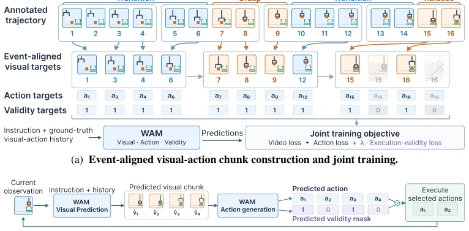
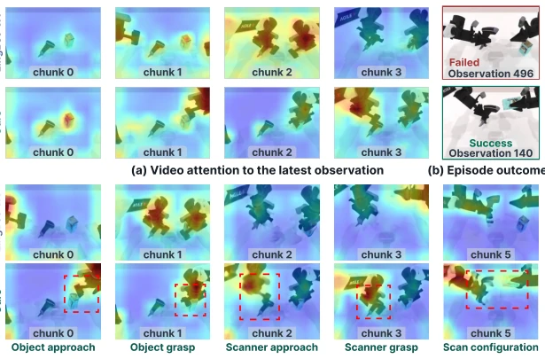

This paper pours cold water on World Action Models (WAMs): do not always treat time as flowing uniformly. Existing methods like LingBot-VA predict based on fixed time slices, resulting in key interactions (such as grasping) being chopped up, while transition actions (such as moving) waste budget. The authors propose "event alignment", adapting visual reasoning granularity to interaction dynamics, focusing on key points rather than scattering pepper everywhere. Although relying on offline annotated event boundaries is slightly cumbersome, the Execution Validity Head solves the redundant action problem in chunked reasoning, quite practical. The 10% improvement on DOMINO indicates that dynamic operations indeed require smarter "mental simulation", rather than rote memorization of the timeline. However, when this method, which strongly relies on task structure, generalizes to unseen interaction types, is the effect stable? Furthermore, although efficiency is improved, how to reduce offline annotation costs in real-world scenarios remains a challenge, after all robots do not have expert-annotated event boundaries at all times.
研究动机Motivation
WAMs 通过视觉预测指导动作生成，已成为具身智能新范式。但现有工作如 Li et al. (2026a) 的 LingBot-VA、Yuan et al. (2026) 的 Fast-WAM 及 Zhang et al. (2026) 的 ImageWAM，大多沿袭训练数据的均匀时间采样结构（Episode Uniform）。这忽略了操作轨迹中不同阶段的功能差异：抓取等交互事件仅占几帧却决定成败，而移动过渡占大部分时间。均匀采样导致关键状态变化被分割在不同预测视界，或过渡阶段占用过多推理预算。这种“一刀切”的视觉想象无法适配任务相关的交互动态，限制了 WAM 在动态操作中的性能上限，亟需一种能根据交互需求自适应调整推理粒度的框架。
WAMs, which guide action generation through visual prediction, have become a new paradigm for embodied intelligence. However, existing works such as LingBot-VA by Li et al. (2026a), Fast-WAM by Yuan et al. (2026), and ImageWAM by Zhang et al. (2026) mostly follow the uniform time sampling structure of training data (Episode Uniform). This ignores the functional differences between different stages in the operation trajectory: interaction events such as grasping occupy only a few frames but determine success or failure, while movement transitions occupy most of the time. Uniform sampling causes key state changes to be split across different prediction horizons, or transition stages to occupy too much reasoning budget. This "one-size-fits-all" visual imagination cannot adapt to task-related interaction dynamics, limiting the performance ceiling of WAMs in dynamic operations, urgently requiring a framework that can adaptively adjust reasoning granularity according to interaction needs.

Figure 2: Interaction-Structured Visual Reasoning framework. Event-aligned chunks allocate visual reasoning according to interaction structure, while execution validity prediction identifies which generated actions to execute.
The overall framework includes event-aligned visual reasoning and execution validity prediction. First, an event taxonomy is constructed, dividing demonstration trajectories into interaction events (including evidence phase and support phase) and transition events. The evidence phase is the observable part of relationship change, and the support phase is the preceding and following motion. Chunk construction follows three rules: do not cross event boundaries, evidence phase maintains original resolution, support phase compresses to fill idle slots. This ensures key interaction details are not downsampled. Second, an execution validity head is introduced to predict whether each action slot is valid during inference. Since short segments are filled with repeated frames during training, this head learns to skip these redundant actions

Figure 3: Visual predictions and attention on a Scan Object demonstration episode. (a) Video attention to the latest observation. (b) Episode outcomes. (c) The last predicted frame of each displayed chunk, overlaid with action attention. Red boxes highlight interaction regions. Both methods start from the same initial observation. Later chunks follow each policy’s own rollout, so frames in the same column can differ.